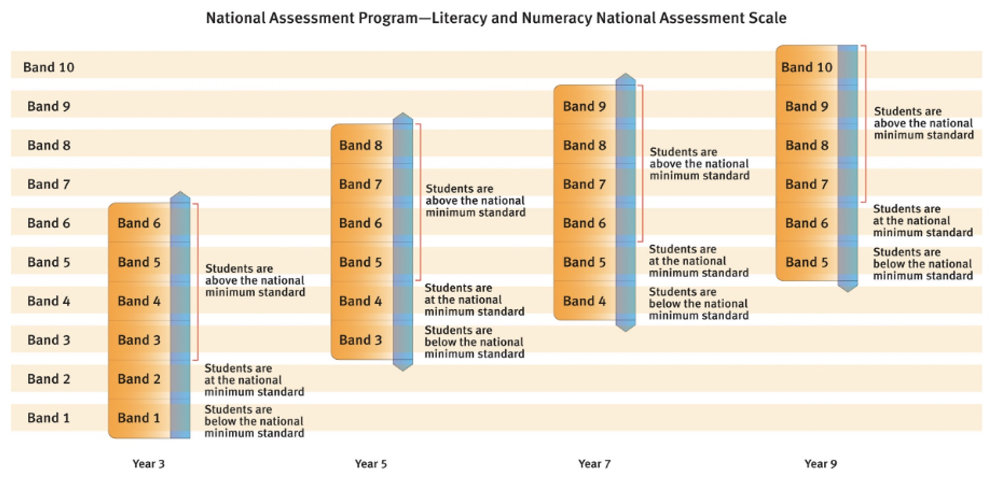
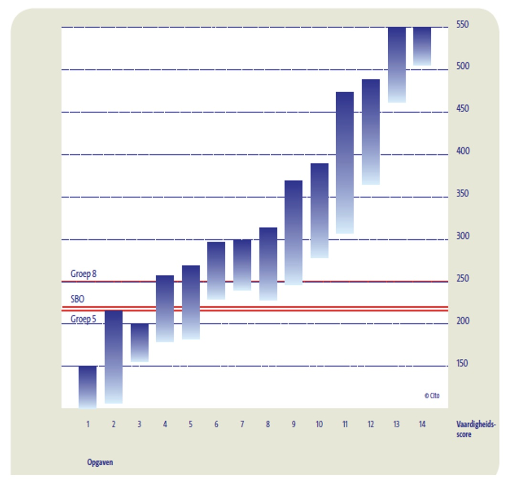
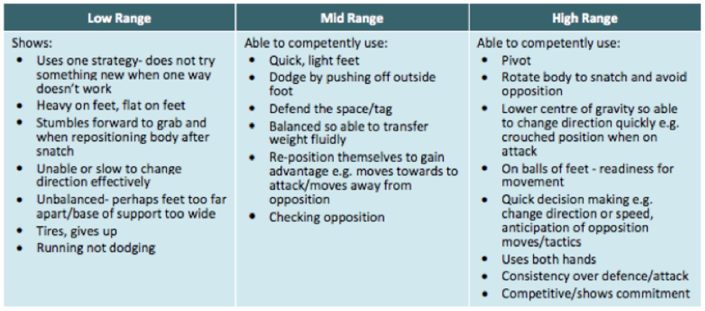
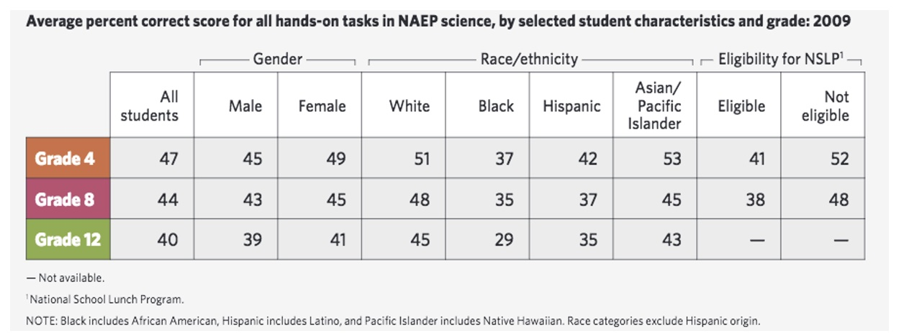
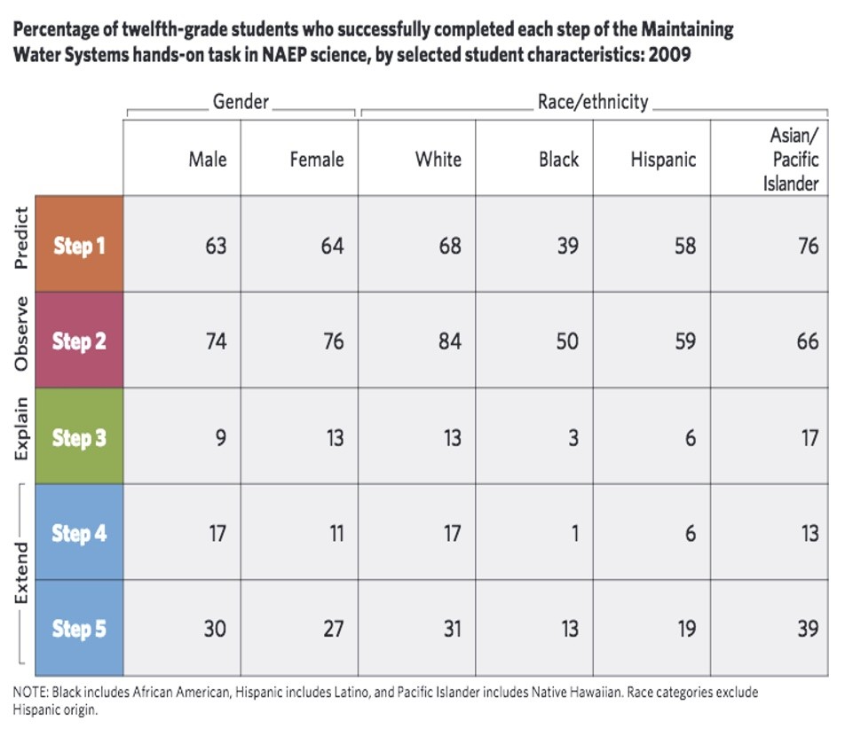
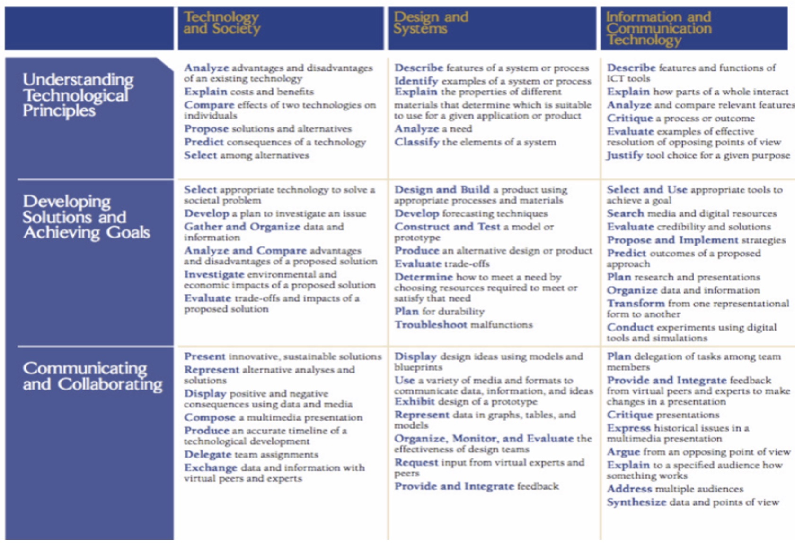

4 Buitenlandse voorbeelden van grootschalige ‘performance assessments’
De analyse van de buitenlandse praktijkvoorbeelden, waarover we in hoofdstuk 3 rapporteerden, stelde ons in staat de evaluatiematrix verder te verfijnen en waar nodig aan te vullen. De interviews gaven ons verdere voeling met de afwegingen die toetsontwikkelaars moeten maken in de zoektocht naar kwaliteitsvolle oplossingen voor de problemen waarmee ze zich geconfronteerd zien. Net omdat de praktijkvoorbeelden een belangrijke bron voor de bevindingen van het onderzoek waren, dat aan de basis van deze publicatie ligt, geven we in dit hoofdstuk een beknopte beschrijving van deze toetssystemen. Op die manier biedt dit hoofdstuk ook de nodige achtergrond voor hoofdstukken 5 en 6, waar regelmatig naar de buitenlandse toetsystemen wordt verwezen.
Voor elk buitenlandse praktijkvoorbeeld beschrijven we eerst de context. Vervolgens zoomen we in op de specifieke toets die we analyseerden en geven we inzicht in verschillende van de bouwstenen van de toets, zoals doel, opzet, ontwikkeling, toetsafname, scoren en rapportering.
4.1 Australië: National Assessment Program – Literacy and Numeracy (NAPLAN)
In Australië wordt sinds 2008 jaarlijks het National Assessment Program – Literacy and Numeracy (NAPLAN) afgenomen. NAPLAN is een toetsprogramma dat als doel heeft de vooruitgang van de kennis en vaardigheden van alle leerlingen in het derde leerjaar (8-9 jaar oud), vijfde leerjaar (10-11 jaar oud), zevende leerjaar (12-13 jaar oud) en negende leerjaar (14-15 jaar oud) met betrekking tot lezen (‘Reading’), schrijven (‘Writing’), taalconventies (‘Language Conventions’) en wiskundige geletterdheid (‘Numeracy’) na te gaan. De toetsen geven een breed beeld van de taal- en wiskunde-aspecten die vervat zitten in de curricula van alle deelstaten en regio’s van Australië. Zo wil men te weten komen in welke mate de nationale standaarden voor deze vier gebieden behaald worden.
ACARA (Australian Curriculum, Assessment and Reporting Authority) ontwikkelt de NAPLAN-toetsen in samenwerking met lokale overheden, private schoolsectoren en de federale overheid. Elke staat/territorium in Australië heeft een eigen instantie die bevoegd is voor het afnemen van de toetsen, het verzamelen van gegevens en het bezorgen van rapporten. De focus van de kwaliteitsbewaking ligt op verschillende niveaus: primair op het niveau van de deelstaten en regio’s en de scholen, maar daarnaast worden er ook resultaten teruggekoppeld aan individuele leerlingen en zijn er ook data beschikbaar op het federale niveau. De gegevens worden beschikbaar gesteld in de vorm van openbare rapporten (resultaten deelstaten & regio’s en federale niveau), de My School-website (resultaten op schoolniveau) en individuele leerlingrapporten voor elke deelnemende leerling.
In ACARA - Australian Curriculum (2014), de toets die we voor deze publicatie bestudeerden, moesten de leerlingen voor de schrijftoets een overtuigende tekst schrijven (‘Persuasive Writing’). Een overtuigende tekst wordt omschreven als een tekst die als belangrijkste doel heeft om een mening te presenteren en probeert om de lezer te overtuigen. Het meten van schrijfvaardigheid werd met andere woorden geoperationaliseerd door één schrijfgenre te toetsen, wat ook wel geleid heeft tot kritiek (zie hoofdstuk 5, 5.2.7.). De toets was voor alle deelnemende leerlingen, m.a.w. voor de leerlingen uit het derde, vijfde, zevende en negende leerjaar, dezelfde. Iedereen kreeg hetzelfde stimulusmateriaal (de zogenaamde ‘writing prompt’). Het thema was: “It is cruel to keep animals in cages. What do you think? Do you (dis)agree? Perhaps you can think of ideas for both sides of this topic”. De afname en het scoren van de schrijftoets gebeurde door getrainde toetsassistenten en beoordelaars, die door de lokale toetsautoriteit op het niveau van de deelstaat of ‘territory’ waren aangesteld. Hoewel elk(e) deelstaat en regio een eigen instantie heeft die bevoegd is voor de toetsafname, garandeert NAPLAN een hoge mate van standaardisering dankzij een nationaal overeengekomen, systematisch ontwikkeld ‘National Protocol for Test Administration’. Alle beoordelaars kregen dezelfde, intensieve training, waarbij ingegaan werd op zowel de procedure als de te gebruiken materialen. Elk schrijfstuk werd (slechts) door één beoordelaar beoordeeld. Alle beoordelaars maakten voor het beoordelen van de schrijfstukken gebruik van dezelfde rubric. Alle NAPLAN-schrijftaken werden online gescoord. Er werden controletaken ingezet om de nauwkeurigheid van beoordelaars te monitoren. Onervaren beoordelaars werden opgevolgd en kregen hertraining indien nodig. De resultaten van NAPLAN ‘Persuasive Writing’ werden gerapporteerd op een gestandaardiseerde, nationale prestatieschaal (zie Figuur 4.1). De schaal was opgedeeld in tien velden of ‘proficiency bands’; deze vormen een weerspiegeling van de toenemende complexiteit op vlak van kennis en vaardigheden van het derde tot het negende leerjaar.

Sinds de NAPLAN van 2015 werd, onder andere na consultatie met curriculumexperts, een andere taak voorzien voor de leerlingen van het derde en het vijfde leerjaar enerzijds en de leerlingen van het zevende en negende leerjaar anderzijds. De taak behoort wel steeds tot hetzelfde genre. Sinds 2015 wordt bovendien niet uitsluitend voor het genre overtuigend schrijven gekozen. De schrijftaak van NAPLAN omvat ofwel een narratieve, ofwel een overtuigende schrijfoefening. Er wordt op voorhand niet aangekondigd voor welk genre werd geopteerd.
4.2 Australië: National Assessment Program (NAP)
Het doel van de NAP ‘sample assessments’ is te kunnen rapporteren over de vooruitgang die leerlingen maken in het behalen van de nationale onderwijsdoelstellingen. Dit gebeurt op nationale basis, via toetsen die afgenomen worden bij steekproeven leerlingen uit steekproeven van scholen uit het lager onderwijs. De verantwoordelijkheid voor de NAP ‘sample assessments’ ligt bij ACARA, dat ook instaat voor NAPLAN. De NAP ‘sample assessments’ toetsen vaardigheden en begrip van leerlingen uit het zesde en het tiende leerjaar, met betrekking tot volgende drie domeinen: wetenschappelijke geletterdheid, maatschappij en burgerschap, en informatie- en communicatietechnologie (ICT). De NAP ‘sample assessments’ zijn gestart in 2003 en elk domein wordt driejaarlijks in kaart gebracht: wetenschappelijke geletterdheid in 2003, 2006, 2009 en 2012; maatschappij en burgerschap in 2004, 2007, 2010 en 2013; en ICT-geletterdheid in 2005, 2008, 2011 en 2014.
ACARA - Australian Curriculum (2014) hanteerde de volgende definitie van ‘ict-literacy’: “The ability of individuals to use ICT appropriately to access, manage and evaluate information, develop new understandings, and communicate with others in order to participate effectively in society”. NAP-ICTL was zodanig opgesteld dat het de typische dagdagelijkse toepassing van ICT weerspiegelde. De toets bestond uit negen scenario-gebaseerde modules, die elk een lineaire narratieve sequentie volgden. Elke leerling kreeg, op toevalsbasis, vier modules toegewezen. Aan NAP – ICTL 2014 nam een representatieve steekproef van 649 scholen deel met in totaal 10.562 leerlingen, wat neerkwam op 87% van de getrokken leerlingen uit het zesde leerjaar en 77% van de getrokken leerlingen uit het tiende leerjaar. Centraal getrainde toetsassistenten namen de toets in de geselecteerde scholen af. Een steekproef van 5% van de deelnemende scholen werd bezocht door getrainde kwaliteitsmonitoren. Via observatie van de toetsassistent, gingen de kwaliteitsmonitoren de uniformiteit en de consistentie van de afnameprocedures in de deelnemende scholen na. Een pool van beoordelaars stond in voor het scoren van de toetsen. Tijdens het scoringsproces zelf werden de antwoorden ofwel automatisch gescoord, ofwel bewaard en later centraal gescoord. Voor elk verschillend item en taaktype werd een afzonderlijke scoringsprocedure en -tool gebruikt. 10 % van de antwoorden werd dubbel gescoord door de aangestelde coördinator. In het geval van inconsistente scores werden de beoordelaars hertraind met betrekking tot dat specifieke item en werden de antwoorden opnieuw gescoord. In totaal werden er 133 items gebruikt om via IRT (1-parameter model) een unidimensionele schaal te bekomen (de ‘NAP–ICTL proficiency scale’). De items en taken in de ‘trend modules’ konden gebruikt worden als link items. Via ‘common item equating’ werd de schaal van 2014 geëquivaleerd met die uit 2011. Over de resultaten werd op drie verschillende manieren gerapporteerd. In eerste instantie op basis van de NAP–ICTL-schaal (gemiddelde schaalscores voor ICT-geletterdheid). Ten tweede als percentage leerlingen binnen de zes onderscheiden bekwaamheidsniveaus, vergezeld met een beschrijving van de ICT-bekwaamheden geassocieerd met dat bepaalde niveau. En ten derde, onder de vorm van het percentage leerlingen dat de prestatiestandaard (‘Proficient Standard’) haalt.
4.3 Nederland: Periodieke Peiling van het Onderwijsniveau (PPON)
In 1986 startte de Nederlandse Minister van Onderwijs, Cultuur en Wetenschappen (OCW) het project Periodieke Peiling van het Onderwijsniveau (PPON), met als belangrijkste doel om een evaluatiekader te bieden voor de kerndoelen van het basisonderwijs. Het peilingsonderzoek had als doel om uitspraken te doen over het bereikte niveau op systeemniveau; rapportering op school- of leerlingniveau werd niet beoogd. Tot 2014 voerde het Centraal Instituut voor Toetsontwikkeling (Cito) het peilingsonderzoek in opdracht van het Ministerie OCW uit. Cito nam de peilingsonderzoeken in hoofdzaak af bij steekproeven leerlingen einde basisonderwijs (jaargroep 8, leeftijd 11-12 jaar), maar voor andere leerdomeinen vond ook onderzoek plaats in jaargroep 5 (8-9 jaar) en op scholen voor speciaal basisonderwijs. Sinds 2014 ligt de regie van het peilingsonderzoek bij de Onderwijsinspectie in het project ‘Peil.onderwijs’, dat in brede zin de kennis, vaardigheden en houding van leerlingen aan het einde van het primair onderwijs in kaart brengt.
In 2009 vormde schrijfvaardigheid van leerlingen één van de foci van de periodieke peiling in Nederland. Het was één van de aspecten die getoetst werden binnen van het leergebied ‘schrijven’. Naast de schrijfopdracht(en) kregen leerlingen ook toetsen spelling, interpunctie, tekstrevisie, grammatica, zinsontleding en woordbenoeming. Binnen schrijfvaardigheid onderscheidde men een inhoudelijke, structurele, stilistische en communicatieve component. Verschillende genres kwamen aan bod; de schrijfopdrachten resulteerden in informatieve, instructieve, verhalende of overtuigende teksten. De schrijfopdrachten streefden naar een hoge graad van authenticiteit; men vroeg leerlingen bijvoorbeeld om een telefonische boodschap door te geven of een briefje op te stellen aan buurtbewoners over de verdwijning van een kat. De opdrachten bestonden telkens uit drie onderdelen: het uitgangsmateriaal (meestal een ‘stel-je-voor-situatiebeschrijving’ aangevuld met bronnenmateriaal, tekeningen of foto’s), een taakinstructie met een expliciet geformuleerde schrijfopdracht, en de schrijfopdracht. Bij het ontwerpen van de schrijfopdrachten werd ernaar gestreefd typische en levensechte taken te ontwikkelen, relevant en betekenisvol voor leerlingen uit groep 5 en groep 8. De totale pool taken in de toets van 2009 omvatte twaalf schrijfopdrachten: leerlingen in groep 5 kregen één of twee opdrachten (45 min); leerlingen in groep 8 meestal vier (90 min). Cito maakte voor de peiling schrijfvaardigheid gebruik van taken uit de peiling van 1999, onder andere met het oog op vergelijking van de resultaten.
Voorbeeld van enkele taken voor PPON Schrijfvaardigheid 2009
Afspraak (informatief). De leerling schrijft een briefje aan zijn of haar moeder. Het doel is een telefonische boodschap die via een cd-rom ten gehore wordt gebracht door te geven.
Beste boek (betogend). De leerling schrijft een brief aan de juffrouw van de bibliotheek en vertelt haar van welk boek of welke film hij of zij het meeste houdt. De leerling moet daarin vertellen waar het over gaat, wat er zo goed aan is en waarom.
Brievenbus (instructief). De leerling leest eerst drie brieven van kinderen die een relationeel probleem hebben en om advies vragen. Vervolgens maakt de leerling een keuze voor één van de drie problemen en schrijft een briefje met advies en tips om te helpen.
De peiling vond plaats op twee momenten in 2009: in het voorjaar voor groep 8 en de eindgroep van het speciaal basisonderwijs en in het najaar voor groep 5. De leerlingen uit deze jaargroepen werden geselecteerd via een tweetrapssteekproeftrekking, waarbij eerst scholen werden getrokken en vervolgens, binnen die scholen, leerlingen. De afname van de schrijfopdrachten gebeurde in groep 5 onder leiding van een centrale toetsassistent, in groep 8 onder leiding van de eigen leerkracht (voor twee van de opdrachten) en de toetsassistent (voor de overige twee opdrachten). Vuistregel hierbij was dat, met het oog op standaardisering, enkel taken die eenvoudig uit te voeren waren, aan de leerkrachten werden overgedragen. Taken die bijvoorbeeld audiofragmenten omvatten, werden afgenomen door toetsassistenten. Leerkrachten dienden een afnameprotocol in te vullen, dat een indicatie kon geven van wanneer er iets mis was gegaan met de toetsafname. Het beoordelen van de schrijfstukken was de verantwoordelijkheid van centraal ingehuurde, getrainde leraren (n = 50); elke tekst werd door twee van hen beoordeeld. Er waren meerdaagse trainingsprogramma’s voorzien, waarin bijvoorbeeld aandacht was voor oefeningen waarbij schaalpunten geïllustreerd worden aan de hand van goede en slechte schrijffragmenten van leerlingen. Om alle opgaven op één gemeenschappelijke schaal uit te drukken, maakte men gebruik van het één-parameter logistisch model (OPLM; IRT). PPON rapporteerde op landelijk niveau en niet over individuele leerlingen of afzonderlijke scholen. Men beeldde de schrijfvaardigheid van de leerlingen en de moeilijkheidsgraad van de opgaven telkens in één figuur af (de vaardigheidsschaal; zie Figuur 4.2 hieronder)(Kuhlemeier et al. 2013). Aan de hand van een set voorbeeldopgaven rapporteerde men zo voor ieder aspect van schrijfvaardigheid afzonderlijk (inhoud, organisatie en structuur, stijl en communicatie) over welke vaardigheid (zeer) zwakke (P10 en P25), gemiddelde (P50) en (zeer) goede schrijvers (P75 en P90) beschikken in termen van aantal opgaven dat ze onvoldoende, matig en goed beheersen. Per jaargroep werd ook een algeheel niveau van schrijfvaardigheid berekend op basis van alle 193 opgaven overheen de inhoudelijke, organisatorische, stilistische en communicatieve kwaliteit.

4.4 Nieuw Zeeland: National Monitoring Study of Student Achievement (NMSSA)
De National Monitoring Study of Student Achievement (NMSSA) is een peilingstoets in opdracht van het Ministerie van Onderwijs van Nieuw-Zeeland. Hij wordt uitgevoerd door de ‘Educational Assessment Research Unit’ (EARU) van de Universiteit van Otago en de ‘New Zealand Council for Educational Research’ (NZCER). De NMSSA startte in 2012 en heeft als doel een momentopname te maken van leerlingenprestaties in relatie tot het Nieuw-Zeelandse curriculum. NMSSA wordt in een vijfjarige cyclus herhaald met het oog op het identificeren van trends. Rapportering over de resultaten gebeurt jaarlijks; enkel op nationaal niveau, niet op het niveau van individuele leerlingen of scholen. Bij de rapportering focust men op de vooruitgang van sleutelpopulatiegroepen van Mãori- and Pasifikaleerlingen, en leerlingen met speciale onderwijsnoden.
NMSSA focust elk jaar op twee leergebieden uit het Nieuw-Zeelandse curriculum. In 2016 zoomde NMSSA in op technologie en stak men ook tijd in de heranalyse van reeds verzamelde gegevens. Kunst en luisteren en kijken vormden de kern van het beoordelingsprogramma in 2015. In 2014 lag de focus op sociale wetenschappen en lezen. Het jaar daarvoor bracht de NMSSA de leerlingenprestaties op vlak van gezondheid en lichamelijke opvoeding enerzijds en wiskunde en statistiek anderzijds in kaart. In het eerste afnamejaar 2012 stonden schrijven (Engels) en wetenschappen in de kijker.
We beschrijven in de volgende paragraaf het leergebied ‘Gezondheid en Lichamelijke Opvoeding’ (Educational Assessment Research Unit & NZCER - New Zealand Council for Educational Research 2014), aangezien daar onze focus initieel op lag. Tijdens de interviews kregen we ook interessante inzichten over het leergebied ‘Kunst’, dat in 2015 aan de beurt was. De relevante inzichten over dit laatste gebied worden aangestipt in hoofdstukken 5 en 6. De doelstellingen van het leergebied ‘Gezondheid en Lichamelijke Opvoeding’ omvatten het welbevinden van leerlingen, van anderen en van de maatschappij door het leren in en over contexten die gerelateerd zijn aan gezondheid en beweging. Gelet op de focus van ‘performance assessment’, ging onze aandacht in de eerste plaats uit naar dat deel van de peilingstoets waar leerlingen een assortiment van bewegingsvaardigheden moesten tonen. Het ‘performance assessment’-deel van de toets bestond uit drie taken: twee taken waarmee de bewegings- en strategische actievaardigheden van de leerlingen werden getoetst tijdens een authentiek spel (‘Rippa Tag’ en ‘Rua Tapahwa’); en een derde taak die een opeenvolging van bewegingen beoordeelde. De taken werden afgenomen en gescoord door getrainde toetsassistenten enbeoordelaars.
Toelichting bij de taken van de NMSSA (2014)
In het eerste spel, ‘Rippa Tag’, was het de bedoeling dat twee leerlingen in een beperkte ruimte het velcro lint van de gordel van de tegenstander trokken. Tijdens deze activiteit ging de aandacht van de beoordelaars onder andere uit naar wendbaarheid en beweeglijkheid, evenwicht en strategische actievaardigheden. In het tweede spel, ‘Rua Tapawhā’ moesten leerlingen de bal in het veld van de tegenstander (een getrainde beoordelaar) werpen zodat deze er niet in zou slagen de bal op te vangen na één keer botsen. Leerlingen werden geëvalueerd op werpen, vangen, ‘defensive tracking’ en strategische actievaardigheden. In de derde activiteit moesten de leerlingen een bewegingssequentie creëren, waarbij ze gebruik moesten maken van verschillende hulpmiddelen. Nadat ze de beweginssequentie hadden uitgevoerd werd aan de leerlingen gevraagd om een nieuwe sequentie uit te voeren, met name de vorige, inclusief een nieuwe beweging. Leerlingen werden o.a. geëvalueerd op hun controle van het materiaal, het gebruik van hun lichaam, de variaties in bewegingen etc.
De selectie van de toevalssteekproef gebeurde in NMSSA getrapt: eerst werden scholen getrokken, daarna - in de getrokken scholen - de leerlingen. Het projectteam trok zo een toevalssteekproef van respectievelijk 100 scholen voor het vierde leerjaar (8 – 9 jaar oud) en 100 scholen voor het achtste leerjaar (12 – 13 jaar oud). Uit elk van de scholen trokken ze in een tweede fase, opnieuw op toevalsbasis, 25 tot 28 leerlingen (3 reserve) voor deelname aan het schriftelijk gedeelte van de toets. Deze toets had overigens betrekking op een ander leergebied, m.n. dat van wiskunde en statistiek. De peiling ‘Health and Physical Education’ werd uitgevoerd bij een subset van 8 leerlingen uit de steekproef van 25 leerlingen, wat neerkomt op een totale steekproefgrootte van circa 800 leerlingen per leerjaar. De toets werd afgenomen door centraal opgeleide toetsassistenten, die nauwgezette instructies meekregen. De antwoorden van de leerlingen op de toets worden op video en schriftelijk vastgelegd en elektronisch bijgehouden met het oog op het scoren. Alle beoordelaars waren ervaren leerkrachten, die daarenboven een specifieke training kregen. Elke taak werd door één beoordelaar beoordeeld. Wel werd gewerkt met een pool van een twintigtal beoordelaars, die tegelijkertijd scoorden. Er waren verschillende kwaliteitszorgprocedures voorzien om de variantie tussen deze beoordelaars binnen de perken te houden. Ook werd voor elk van de drie fysieke activiteiten waarmee de bewegingsvaardigheden van de leerlingen werden getoetst, een aparte rubric opgesteld. Deze rubric definieerde een set vaardigheden die een lage mate van competentie vertegenwoordigden; vervolgens een set die een middelmatige mate vertegenwoordigen; en ten slotte een reeks die een sterke mate vertegenwoordigen (zie Figuur 4.3 voor een voorbeeld van een rubric van één van de drie taken).

Over de resultaten van de peiling van ‘Health and Physical Education’ werd op twee manieren gerapporteerd: via een schaal rond ‘Critical Thinking in Health and Physical Education’, die afgestemd was op de niveaus van het ‘New Zealand Curriculum’; en via aparte descriptieve rapportering van het inzicht van leerlingen in welzijn en hun prestaties inzake bewegingsvaardigheden. Over het ‘performance assessment’-gedeelte van de peilingstoets werd apart en louter beschrijvend gerapporteerd.
Descriptieve rapportering bewegingsvaardigheden NMSSA (2014)
Rippa Tag: proportion of students at both year levels scoring at:
- Level ‘Student displays all/almost all aspects from high range movement list’
- Level ‘Student displays a variety of aspects – mainly mid range with some high range movements’
- Level ‘Student displays a few aspects from mid range with some low range movements’
- Level ‘Student displays low range movements’
Rua Tapawhā: proportion of students at both year levels scoring at:
- Level ‘Student displays all/almost all aspects from high range movement list’
- Level ‘Student displays a variety of aspects – mainly mid range with some high range movements’
- Level ‘Student displays a few aspects from mid range with some low range movements’
- Level ‘Student displays low range movements’
Movement sequence: Students’ aggregated scores for the three aspects of the movement sequences task are reported > proportion of students at both year levels scoring at
- low range (No response/don’t know, does not complete 3 movements, no evidence of consistency, and no evidence of cooperative work)
- low-mid range (Includes at least 3 movements/ 1 element, 1 aspect of consistency, and 1 aspect of cooperative work)
- mid-high range (Includes 2-3 elements, 2 aspects of consistency, and 2 aspects of cooperative work)
- high range (Includes 4 or more elements, 3 aspects of consistency, and 3 aspects of cooperative work)
4.5 Schotland: Scottish Survey of Literacy and Numeracy (SSLN)
De Scottish Survey of Literacy and Numeracy (SSLN) werd in 2009 ontwikkeld om het Schotse curriculum (‘Curriculum for Excellence’ - CfE) te toetsen. SSLN is volledig afgestemd op het CfE; de toetsen zijn zo opgezet dat ze een weerspiegeling vormen van de curriculumdoelstelllingen. SSLN wordt jaarlijks, alternerend voor geletterdheid (2012, 2014, 2016) en wiskundige geletterdheid (2011, 2013, 2015), afgenomen bij leerlingen uit het vierde jaar primair onderwijs (8-9 jaar), het zevende jaar primair onderwijs (11-12 jaar) en het tweede jaar secundair onderwijs (13-14 jaar), met het oog op het bewaken van de prestaties van leerlingen. Het betreft een momentopname van de verworvenheden op een welbepaald moment in de tijd. De focus ligt ook op het maken van vergelijkingen tussen afnamejaren. Er wordt enkel op systeemniveau gerapporteerd. De resultaten van de survey zetten ook aan tot verdere ontwikkeling op vlak van leren, lesgeven en toetsen doorheen de ontwikkeling van ‘Professional Learning Resources’.
SSLN is een partnerschap tussen de Schotse regering, ‘Education Scotland’, het Schotse agentschap voor kwalificaties (‘Scottish Qualifications Authority’: SQA), de ‘Association of Directors of Education in Scotland’ en lokale autoriteiten. Alle Schotse scholen nemen deel aan SSLN; leerlingen worden op basis van toeval geselecteerd. Om de belasting voor scholen zo klein mogelijk te houden, selecteert men slechts drie leerlingen uit het vierde en zevende jaar primair onderwijs en 14 leerlingen uit het tweede jaar secundair onderwijs. Jaarlijks nemen per leerjaar ongeveer 4.000 leerlingen deel.
SSLN-2014 focuste op drie aspecten van geletterdheid: lezen, schrijven en luisteren & spreken. Schrijven werd getoetst op grond van twee schrijfproducten (per leerling) in 50% van de scholen; luisteren & spreken op basis van een groepsdiscussie onder leerlingen, in 40% van de scholen. De steekproef leerlingen voor SSLN-2014 omvatte per school 2 leerlingen in het vierde jaar primair onderwijs, 2 leerlingen in het zevende jaar primair onderwijs en 12 leerlingen in het tweede jaar secundair onderwijs. De schrijfstukken werden geselecteerd door de leerkracht zelf op grond van centrale richtlijnen. Met betrekking tot de component ‘luisteren & spreken’ ontwikkelde men telkens twaalf groepsdiscussietaken. Er werden 120 personen aangesteld om de groepsdiscussietaken af te nemen en terzelfdertijd te beoordelen. Zij volgen vooraf een uitgebreid, geaccrediteerd opleidingsprogramma. Het beoordelen van de stukken gebeurde centraal, door getrainde beoordelaars. De groepsdiscussietaak (15 min), die op gang getrokken werd rond een bepaald topic, werd afgenomen en terzelfdertijd beoordeeld door externe, getrainde beoordelaars. Elk schrijfstuk werd beoordeeld door drie onafhankelijke beoordelaars (onderwijsprofessionals, doorgaans leerkrachten in functie) aan de hand van de criteria uit de scoringstool. Het in ‘real time’ scoren en beoordelen van de prestaties van de leerlingen op de groepsdiscussietaken gebeurde door externe assessoren teneinde potentiële bias vanwege de eigen leerkracht, die de leerlingen kent, te voorkomen. Dit gebeurde ook aan de hand van een scoringstool. De prestatiecategorieën (‘not yet working within the level’, ‘working within the level’, ‘performing well at the level’, ‘performing very well at the level’, ‘performing beyond the level’) waren vastgelegd vanuit het CfE en werden vervolgens toegepast op SSLN. Deze prestatiecategorieën fungeerden ook als rapporteringscategorieën: voor elk van de componenten van geletterdheid rapporteerde men resultaten onder de vorm van het aandeel leerlingen in de verschillende leerkaren in elk van de vijf prestatiecategorieën.
4.6 Verenigde Staten: National Assessment of Educational Progress (NAEP)
De National Assessment of Educational Progress (NAEP) heeft als doel om informatie te leveren over de prestaties van groepen van leerlingen (bv. alle leerlingen uit het vierde leerjaar) en subgroepen (bv. meisjes) in verschillende disciplines. Er worden geen resultaten opgeleverd op het niveau van individuele leerlingen of scholen. De resultaten zijn gebaseerd op representatieve steekproeven van leerlingen uit het vierde leerjaar (9-10 jaar), het achtste leerjaar (13-14 jaar) en het twaalfde leerjaar (17-18 jaar). De betrokken inhoudsdomeinen zijn kunst, maatschappijleer, vreemde talen, wiskunde, lezen, wetenschappen, technologie en technische geletterdheid, geschiedenis van de Verenigde Staten, wereldgeschiedenis en schrijven. Twee belangrijke spelers betrokken bij de uitwerking van het NAEP zijn de ‘National Assessment Governing Board’ (NAGB) en het ‘National Center for Education Statistics’ (NCES). Het NAGB is verantwoordelijk voor de domeinbeschrijving, het toetsraamwerk en het vastleggen van de prestatiestandaarden. Het NCES draagt de eindverantwoordelijkheid over de ontwikkeling van de toetsen. De eigenlijke ontwikkeling is vaak in handen van toetsontwikkelaars die in onderaaanneming werken. Voor de studie die aanleiding gaf tot deze publicatie, bestudeerden we NAEP-Science (2009) en NAEP-Technology & Engineering Literacy (2013).
NAEP-Science van 2009 peilde naar de kennis en vaardigheden van leerlingen uit het vierde, achtste en twaalfde jaar met betrekking tot natuurwetenschappen, levenswetenschappen en aarde- en ruimtewetenschappen. De hoofdstudie bestond uit een klassieke toets met meerkeuzevragen en werd afgenomen bij een steekproef van 156.500 vierdejaars, 151.000 achtstejaars en 11.100 twaalfdejaars. Daarnaast waren er twee aparte toetsen, ‘Interactive Computer Tasks’ (ICTs) and ‘Hands-On Tasks’ (HOTs), die proefgedraaid werden, elk bij een aparte nationaal representatieve steekproef van 2000 leerlingen voor elk van de drie leerjaren. Dit laatste deel van de toets had als doel de vaardigheden van de leerlingen op het vlak van ‘scientific inquiry’ (wetenschappelijk onderzoek) na te gaan. De ‘hands-on’ taken duurden veertig minuten en gaven leerlingen de mogelijkheid aan te tonen in hoeverre ze in staat zijn om wetenschappelijk onderzoek te plannen en uit te voeren, te redeneren doorheen complexe problemen en hun wetenschappelijke kennis toe te passen in reële contexten. Hiervoor konden ze gebruik maken van verschillende soorten materiaal en laboratoriumuitrusting om echte experimenten uit te voeren. De interactieve taken duurden twintig tot veertig minuten en vereisten dat leerlingen een wetenschappelijk probleem oplosten in een gesimuleerde (natuurlijke of laboratorium-)omgeving. NAEP maakte voor alle toetsen gebruik van uitvoerig getrainde toetsassistenten. Bovendien werd voor alle toetsafnames ook het ‘eigen’ materiaal meegenomen, zoals laptops, kits met het materiaal voor de hands-on taken, om op die manier standaardisering van afname doorheen het land te verzekeren. Er werd gezorgd voor speciale regelingen qua afname voor leerlingen met een functiebeperking. Voor toetsen die via de computer werden afgenomen, startte de toets met een ‘tutorial’ die ervoor moet zorgen dat leerlingen succesvol doorheen de taken kunnen navigeren. Voor elk item en elke taak wordt tegelijkertijd en door dezelfde mensen een rubric ontwikkeld. NAEP maakte voor alle toetsen gebruik van een uitgebreid protocol voor het scoren van de toetsen, waarbij naast het uitwerken en testen van de scoringstools ook procedures werden uitgewerkt die consistent, valide en objectief scoren in de hand werken. Items en taken werden gescoord door getrainde beoordelaars. Beoordelaars werden ingedeeld in teams van acht tot twaalf leden en werkten in dat team voor de gehele duur van het scoringsproces, dat ongeveer een maand duurde, en gebald voor één inhoudsdomein op één locatie gebeurde. Alle scores voor een welbepaalde taak of item gebeurden binnen één team, om een consistente toepassing van de rubric te verzekeren. Daarbij werd er binnen het team taak per taak gescoord. Aan het hoofd van het team stond een trainer, die de training en eventuele hertraining op zich nam. Daarnaast was er een scoresupervisor, die de data monitorde terwijl er werd gescoord. De vereiste was dat in het geval van drie- of vierpuntsschalen een beoordelaarsovereenstemming van 75% werd gehaald. Afhankelijk van de omvang van de steekproef was een aandeel van de taken dubbel gescoord, tussen 5 en 25%. De resultaten voor de ICTs en de HOTs werden niet geschaald. De data werden geanalyseerd om een samenvatting te bieden van de prestaties van leerlingen. Percent-correctstatistieken werden per taak en over de verschillende taken heen berekend en gerapporteerd (zie Figuur 4.4 en Figuur 4.5). Dit stond in contrast met de resultaten van de hoofdstudie, die wel werd geschaald en waar wel een niveaubepaling op werd toegepast in de vorm van ‘basic’-, ‘proficient’- of ‘advanced’-prestatieniveaus.


NAEP-Technology & Engineering Literacy (2013) werd in 2013 voor de eerste keer afgenomen bij leerlingen uit het achtste leerjaar. Het uitwerken van de domeinbeschrijving vormde een uitdaging in de zin dat er geen curricula rond ‘technology and engineering’ in de VS aanwezig waren, waarvan kon worden vertrokken. Omdat TEL crosscurriculair was, vertrok het van verschillende inhoudsdomeinen uit het curriculum. Tegen die achtergrond lag een brede bevraging aan de basis van de domeinbeschrijving. De toets was volledig ICT-gebaseerd; er werd vertrokken van realistische scenario’s om leerlingen verschillende taken te laten uitvoeren. De toets duurde vijftig minuten. Hij bestond uit korte scenario’s, lange scenario’s en ‘discrete items’, die via een matrix-sampling design in verschillende samenstellingen werden aangeboden aan de leerlingen. De langere scenario’s waren complexer en bevatten meer ingebedde taken. De toetsmatrijs achter deze toetsen is weergegeven in Figuur 4.6.

De steekproef bestond uit 20.000 leerlingen (steekproef representatief op het nationale niveau). Voor het afnemen en scoren van deze toets werden dezelfde richtlijnen gevolgd, die ook voor NAEP-Science golden (zie 4.6.2.). De resultaten van de toets werden op één TEL-schaal geplaatst. Daarnaast werden er ook schalen ontworpen voor de subdimensies die werden onderscheiden in het toetsraamwerk. Er werden ook prestatiestandaarden gezet, al gebeurde dit alleen voor de geïntegreerde TEL-schaal. Deze standaardzetting was een uitdagende oefening, enerzijds door de mix van meerkeuzevragen en ‘constructed-response’-vragen, en anderzijds door de vele interactieve scenariotaken.